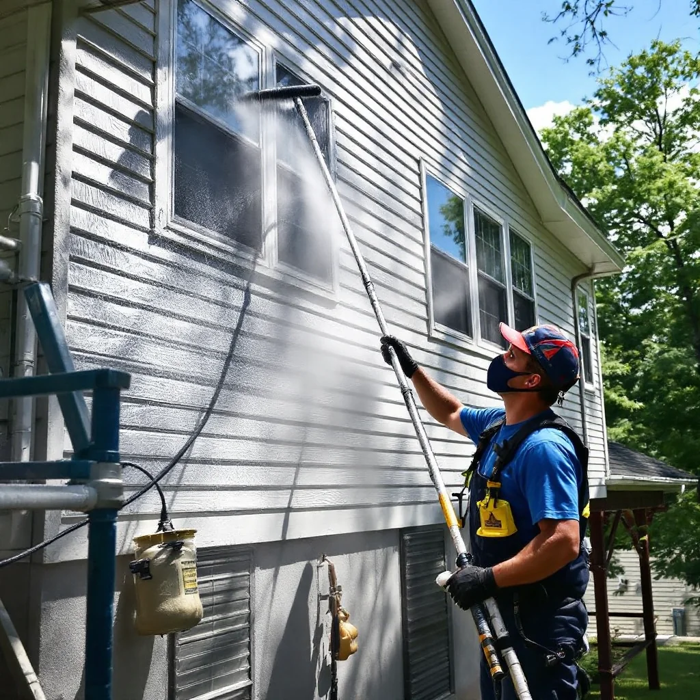

House Washing in Knoxville, TN

Professional Soft Wash House Cleaning
Your home's exterior takes a beating from Tennessee's humidity, pollen, and rain. Over time, dirt, mold, mildew, and algae build up on siding, brick, and stucco — making your home look older than it is and potentially causing long-term damage.
Our soft wash house cleaning uses low-pressure water combined with professional-grade cleaning solutions to safely remove buildup without damaging your siding, paint, or windows. It's the method recommended by most siding manufacturers.
What We Clean
- Vinyl siding
- Brick and stone exteriors
- Stucco and EIFS
- Painted wood siding
- HardiePlank / fiber cement
- Gutters and downspouts (exterior)
House Washing Pricing in Knoxville
Most single-story homes in the Knoxville area run between $250–$400. Two-story homes typically range from $350–$550 depending on size and accessibility. See our full cost guide for more details.
How Often Should You Wash Your House?
We recommend every 1–2 years in the Knoxville area. Homes with significant shade, near trees, or on the north side of hills may need annual cleaning due to faster algae and mildew growth.
Ready to restore your home's curb appeal? Request a free estimate or call (865) 555-0199.